A · Y-tile
01 Y-tile — blue
White calendar card, blue header band, ink Y. Closest evolution of the current favicon.
svg/01-mark-y-tile-blue.svg png/marks/01-mark-y-tile-blue-512.png png/marks/01-mark-y-tile-blue-128.png02 Y-tile — green
Green header accent variant.
svg/02-mark-y-tile-green.svg png/marks/02-mark-y-tile-green-512.png png/marks/02-mark-y-tile-green-128.png03 Y-tile — purple
Purple header accent variant.
svg/03-mark-y-tile-purple.svg png/marks/03-mark-y-tile-purple-512.png png/marks/03-mark-y-tile-purple-128.png04 Y-tile — orange
Orange header accent variant.
svg/04-mark-y-tile-orange.svg png/marks/04-mark-y-tile-orange-512.png png/marks/04-mark-y-tile-orange-128.png05 Y-tile — teal
Teal header accent variant.
svg/05-mark-y-tile-teal.svg png/marks/05-mark-y-tile-teal-512.png png/marks/05-mark-y-tile-teal-128.png06 Y-tile — solid blue
Full blue card with white Y. Direct refresh of today's favicon.
svg/06-mark-y-tile-solid-blue.svg png/marks/06-mark-y-tile-solid-blue-512.png png/marks/06-mark-y-tile-solid-blue-128.png07 Y-tile — mono
Single-color repro version: ink header, ink Y, ink shadow.
svg/07-mark-y-tile-mono.svg png/marks/07-mark-y-tile-mono-512.png png/marks/07-mark-y-tile-mono-128.png08 Y-tile — dark mode
Inverted card for dark backgrounds; blue header, white Y.
svg/08-mark-y-tile-dark.svg png/marks/08-mark-y-tile-dark-512.png png/marks/08-mark-y-tile-dark-128.pngB · Y-date
09 Y-date — blue
Calendar page where the Y is the date; SEP header, event chip, notification dot.
svg/09-mark-y-date-blue.svg png/marks/09-mark-y-date-blue-512.png png/marks/09-mark-y-date-blue-128.png10 Y-date — orange
Orange accent variant of the Y-date page.
svg/10-mark-y-date-orange.svg png/marks/10-mark-y-date-orange-512.png png/marks/10-mark-y-date-orange-128.png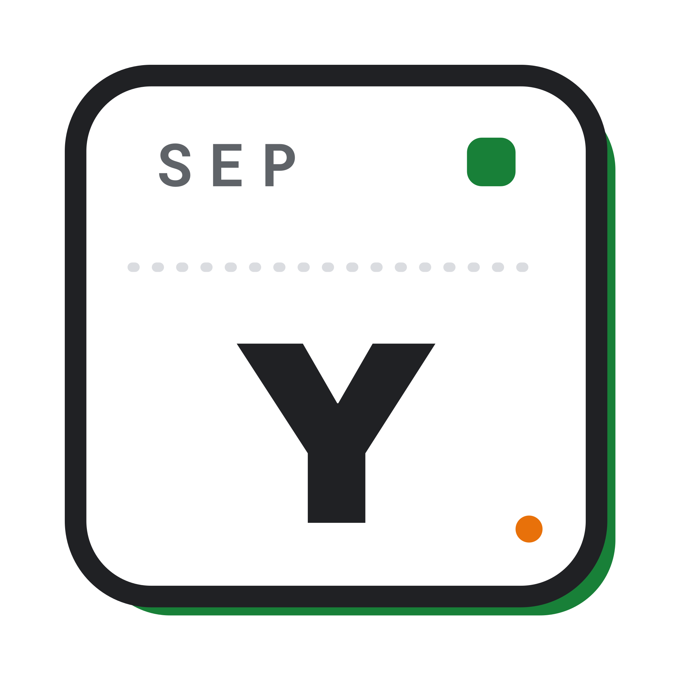
11 Y-date — green
Green accent variant of the Y-date page.
svg/11-mark-y-date-green.svg png/marks/11-mark-y-date-green-512.png png/marks/11-mark-y-date-green-128.pngC · Lettermark
12 BC lettermark
"BC" monogram on a page with folded calendar corner.
svg/12-mark-bc-lettermark.svg png/marks/12-mark-bc-lettermark-512.png png/marks/12-mark-bc-lettermark-128.png13 BYU lettermark
"BYU" on a page with folded calendar corner.
svg/13-mark-byu-lettermark.svg png/marks/13-mark-byu-lettermark-512.png png/marks/13-mark-byu-lettermark-128.pngD · Event-dot Y
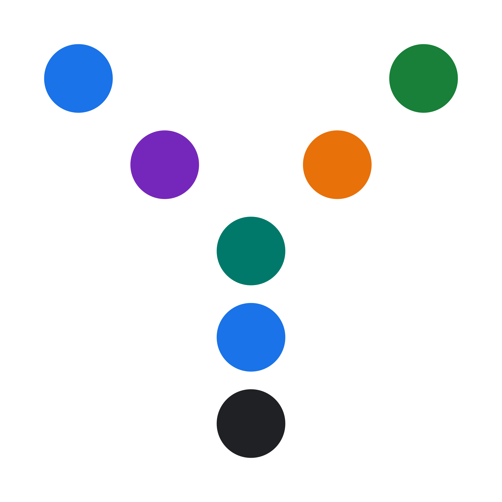
14 Event-dot Y
Y assembled from calendar event dots in the five accent colors. Transparent background.
svg/14-mark-dot-y.svg png/marks/14-mark-dot-y-512.png png/marks/14-mark-dot-y-128.png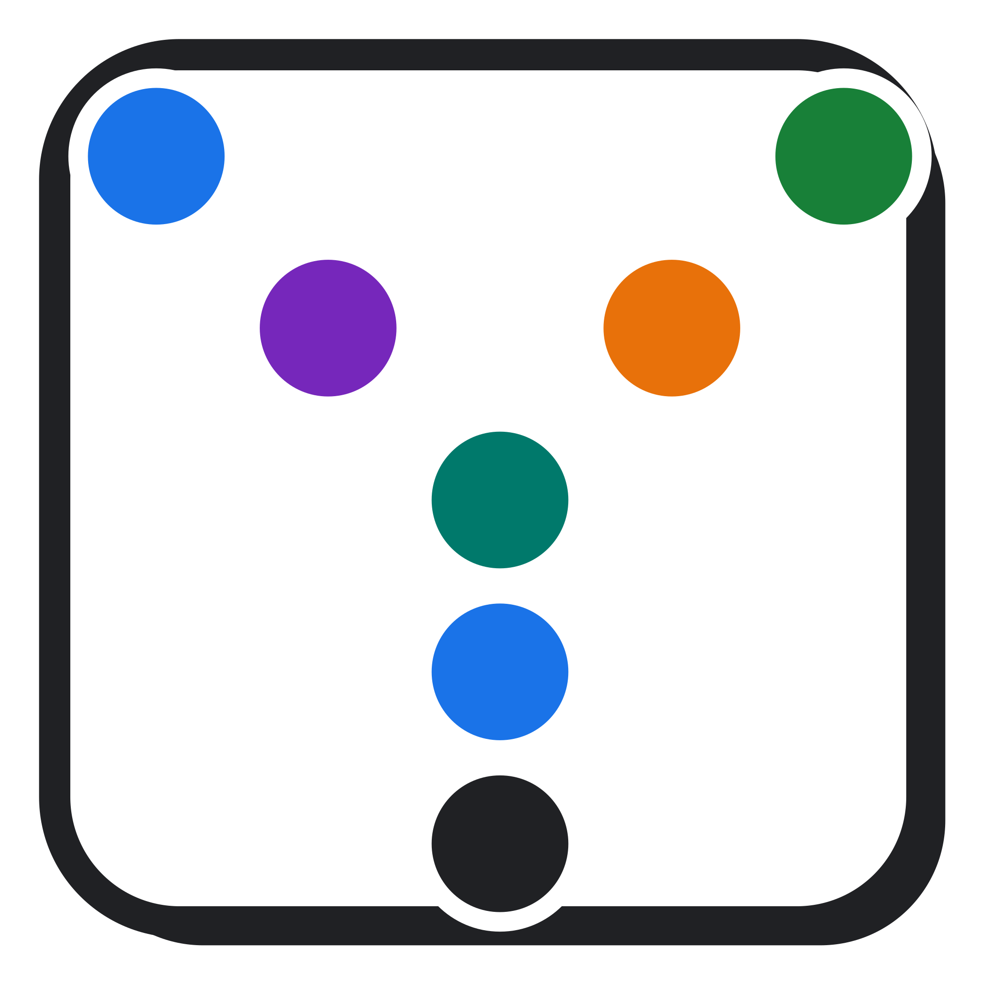
15 Event-dot Y — on card
Dot-mosaic Y on a bordered white card.
svg/15-mark-dot-y-tile.svg png/marks/15-mark-dot-y-tile-512.png png/marks/15-mark-dot-y-tile-128.pngE · One-calendar stack
16 One-calendar stack
Scattered event pages collapsing into one calendar card — the product story as a mark.
svg/16-mark-stack-pages.svg png/marks/16-mark-stack-pages-512.png png/marks/16-mark-stack-pages-128.pngF · Wordmark
17 Wordmark — two-tone
Archivo ExtraBold: ink "BYU" + blue "Calendar".
svg/17-wordmark-byu-calendar.svg png/wordmarks/17-wordmark-byu-calendar-1600.png18 Wordmark — dark mode
White/pale-blue wordmark for dark backgrounds.
svg/18-wordmark-byu-calendar-dark.svg png/wordmarks/18-wordmark-byu-calendar-dark-1600.png19 Wordmark — caps + period
Archivo Black caps with an orange full-stop.
svg/19-wordmark-caps-period.svg png/wordmarks/19-wordmark-caps-period-1600.png20 Wordmark — terminal
Roboto Mono lowercase with a blue block cursor. Nods to the app's mono labels.
svg/20-wordmark-terminal.svg png/wordmarks/20-wordmark-terminal-1600.png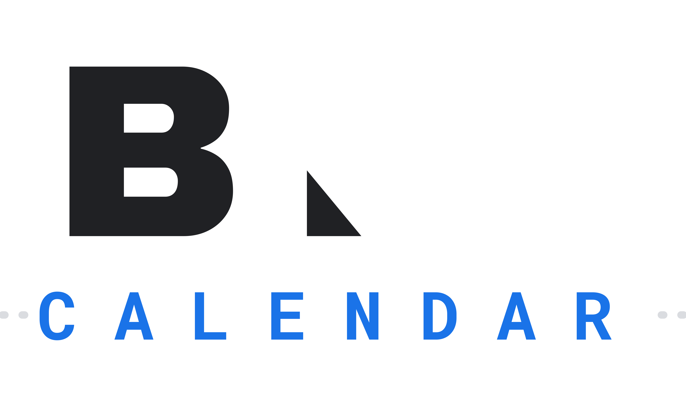
21 Wordmark — stacked
Big Archivo Black BYU over tracked-out mono CALENDAR with dotted rules.
svg/21-wordmark-stacked.svg png/wordmarks/21-wordmark-stacked-1600.pngG · Lockup
22 Horizontal lockup
Y-tile + two-tone wordmark + orange event dot. Primary header lockup candidate.
svg/22-lockup-horizontal.svg png/lockups/22-lockup-horizontal-1600.png23 Horizontal lockup — dark
Solid-blue tile + light wordmark for dark surfaces.
svg/23-lockup-horizontal-dark.svg png/lockups/23-lockup-horizontal-dark-1600.png24 Stacked lockup
Y-tile over centered wordmark. Square-ish footprint for splash screens.
svg/24-lockup-stacked.svg png/lockups/24-lockup-stacked-1600.png
25 Stacked lockup — story mark
One-calendar stack over big BYU + tracked CALENDAR.
svg/25-lockup-stacked-pages.svg png/lockups/25-lockup-stacked-pages-1600.png26 Mono lockup
All-ink version for single-color printing or embroidery.
svg/26-lockup-mono.svg png/lockups/26-lockup-mono-1600.pngH · Emblem
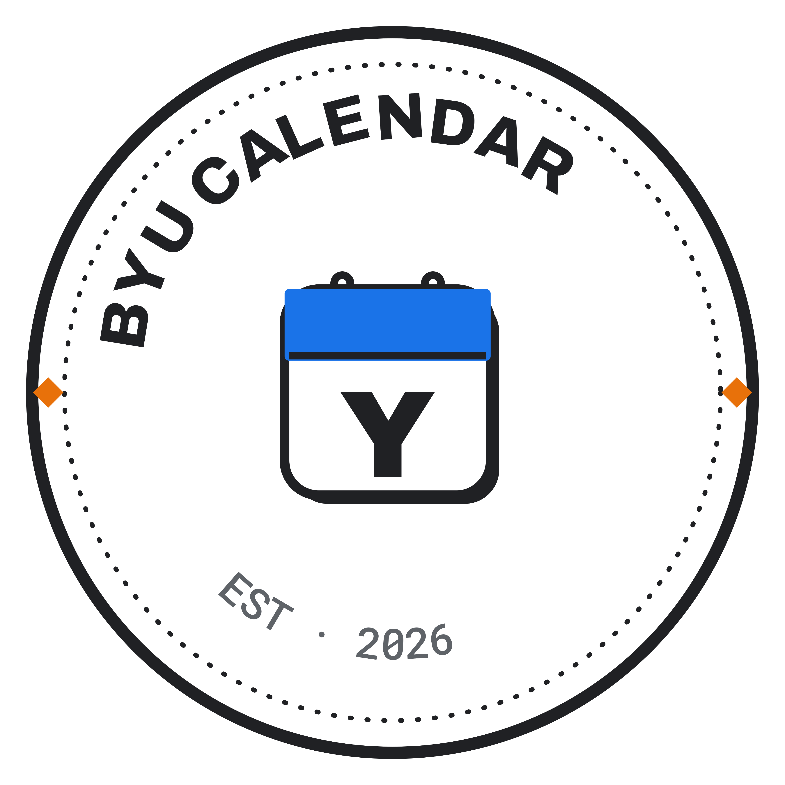
27 Badge emblem
Circular badge: Y-tile center, BYU CALENDAR around the ring, EST·2026 at bottom. Sticker/merch vibe.
svg/27-emblem-badge.svg png/emblem/27-emblem-badge-1024.png png/emblem/27-emblem-badge-256.pngI · Banner
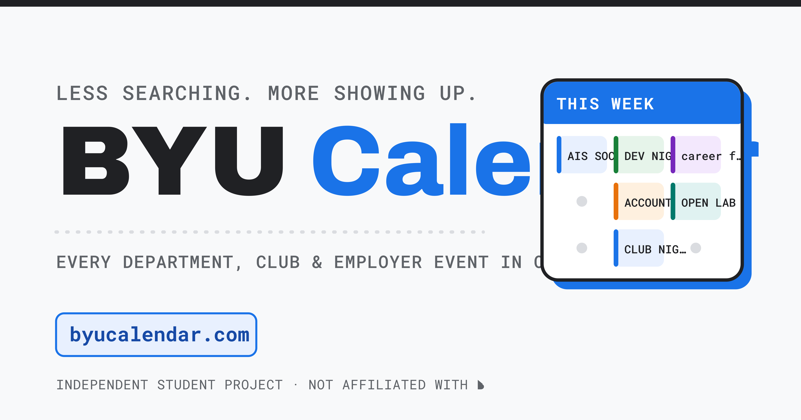
28 OG banner — product
1200×630 social preview: headline, URL chip, and a this-week calendar card with real fonts.
svg/28-banner-og-refined.svg png/banners/28-banner-og-refined-1200x630.png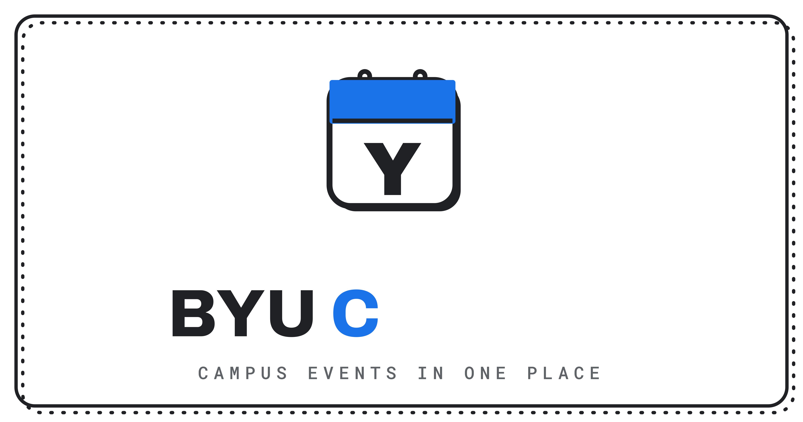
29 OG banner — centered
1200×630 framed centered lockup with dotted offset frame.
svg/29-banner-og-centered.svg png/banners/29-banner-og-centered-1200x630.png30 Social header
1500×500 centered wordmark with event-dot strip. Twitter/X or LinkedIn cover.
svg/30-banner-header.svg png/banners/30-banner-header-1500x500.png66 OG — Y left + stacked
Simple OG: solid blue Y left, stacked BYU / Calendar., URL.
svg/66-banner-og-y-stacked.svg png/banners/66-banner-og-y-stacked-1200x630.png67 OG — centered (LIVE)
Simple OG: centered blue Y over one-line BYU Calendar + URL. Installed as public/og-image.png.
svg/67-banner-og-y-centered.svg png/banners/67-banner-og-y-centered-1200x630.png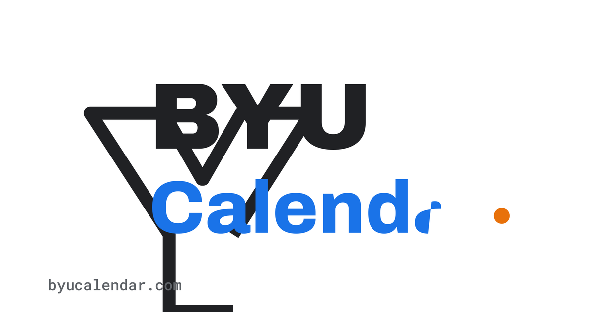
68 OG — hollow Y left
Variant A layout with the hollow outline Y.
svg/68-banner-og-y-outline.svg png/banners/68-banner-og-y-outline-1200x630.pngJ · Favicon
31 Favicon — blue
Blue tile, white Y. The workhorse favicon. 16/32/48 PNG + SVG in favicons/.
svg/31-favicon-blue.svg favicons/31-favicon-blue-16.png favicons/31-favicon-blue-32.png favicons/31-favicon-blue-48.png32 Favicon — blue + rings
Blue tile with calendar ring posts. 16/32/48 PNG + SVG in favicons/.
svg/32-favicon-blue-rings.svg favicons/32-favicon-blue-rings-16.png favicons/32-favicon-blue-rings-32.png favicons/32-favicon-blue-rings-48.png33 Favicon — ink
Dark tile with blue Y. 16/32/48 PNG + SVG in favicons/.
svg/33-favicon-ink.svg favicons/33-favicon-ink-16.png favicons/33-favicon-ink-32.png favicons/33-favicon-ink-48.png34 Favicon — light
White tile, ink border, blue Y (light browser themes). 16/32/48 PNG + SVG in favicons/.
svg/34-favicon-light.svg favicons/34-favicon-light-16.png favicons/34-favicon-light-32.png favicons/34-favicon-light-48.png35 Favicon — outline
White tile, blue header band, rings, ink Y. 16/32/48 PNG + SVG in favicons/.
svg/35-favicon-headerline.svg favicons/35-favicon-headerline-16.png favicons/35-favicon-headerline-32.png favicons/35-favicon-headerline-48.pngcontainer file — see files below
36 favicon.ico (multi-size)
Classic multi-resolution ICO built from the blue favicon (16/32/48).
favicons/favicon.icoK · App icon
37 App icon — calendar card
Full-bleed blue with white event-card mark (refined current style). 192/512.
svg/37-appicon-card.svg app-icons/37-appicon-card-512.png app-icons/37-appicon-card-192.png38 App icon — maskable
Same card design inside the Android maskable safe zone. 512.
svg/38-appicon-card-maskable.svg app-icons/38-appicon-card-maskable-512.png39 App icon — light
Y-tile mark on pale-blue field. Light-theme launcher icon. 192/512.
svg/39-appicon-light.svg app-icons/39-appicon-light-512.png app-icons/39-appicon-light-192.png40 App icon — Apple touch
Y-tile on white, 180×180 for iOS home screens.
svg/40-appicon-appletouch.svg app-icons/40-appicon-appletouch-180.pngM · Big-Y glyph
46 Big Y — ink field
Chunky Archivo Y in white on a near-black rounded square. Favicon-proof at any size.
svg/46-glyph-y-ink.svg png/marks/46-glyph-y-ink-512.png png/marks/46-glyph-y-ink-128.png47 Big Y — blue field
White Y on the app blue. Simple, ownable, unmistakably an app icon.
svg/47-glyph-y-blue.svg png/marks/47-glyph-y-blue-512.png png/marks/47-glyph-y-blue-128.png48 Big Y — orange field
White Y on orange — the friendliest accent in the palette.
svg/48-glyph-y-orange.svg png/marks/48-glyph-y-orange-512.png png/marks/48-glyph-y-orange-128.png49 Big Y — teal field
White Y on teal. Cooler, calmer read than blue.
svg/49-glyph-y-teal.svg png/marks/49-glyph-y-teal-512.png png/marks/49-glyph-y-teal-128.png50 Big Y — hollow outline
Outlined Y, no fill. Sporty, light, works on photos.
svg/50-glyph-y-outline.svg png/marks/50-glyph-y-outline-512.png png/marks/50-glyph-y-outline-128.png51 Big Y — split tone
Y split straight down the middle: blue left, teal right.
svg/51-glyph-y-split.svg png/marks/51-glyph-y-split-512.png png/marks/51-glyph-y-split-128.png52 Big Y — gradient
Blue→teal diagonal gradient. Modern-SaaS take, furthest from collegiate.
svg/52-glyph-y-gradient.svg png/marks/52-glyph-y-gradient-512.png png/marks/52-glyph-y-gradient-128.png65 Big Y — blue fill
The hollow Y filled solid blue — now the live favicon; its hollow sibling (50) is the header logo.
svg/65-glyph-y-blue-fill.svg png/marks/65-glyph-y-blue-fill-512.png png/marks/65-glyph-y-blue-fill-128.pngN · Constructed Y
53 Capsule Y
Y drawn as three fat rounded strokes — friendly, geometric, font-free.
svg/53-built-y-capsule.svg png/marks/53-built-y-capsule-512.png png/marks/53-built-y-capsule-128.png
54 Event-bar Y
The Y built from the app's own week-view event chips — pale cards with color tabs. Calendar-coded without drawing a calendar.
svg/54-built-y-eventbars.svg png/marks/54-built-y-eventbars-512.png png/marks/54-built-y-eventbars-128.png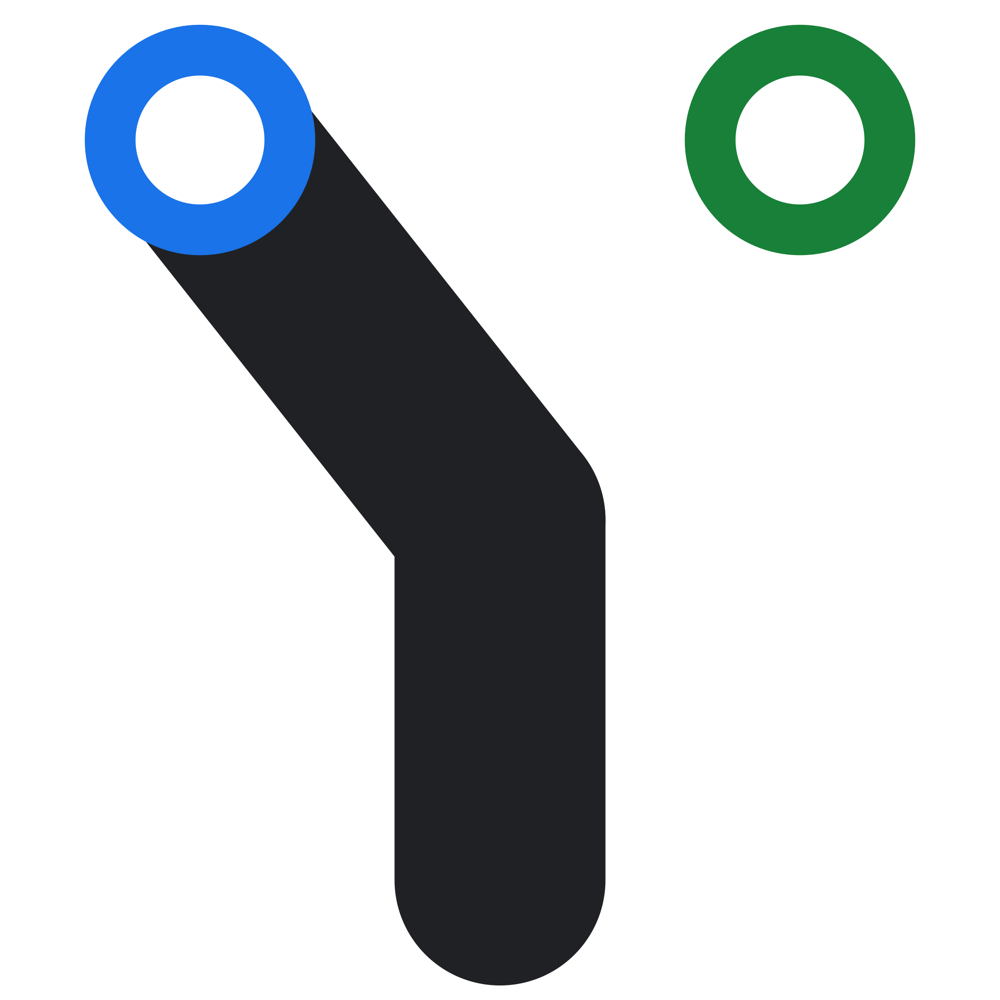
55 Binder-ring Y
Capsule Y with calendar binder rings riding the arm tips. Playful calendar cue.
svg/55-built-y-rings.svg png/marks/55-built-y-rings-512.png png/marks/55-built-y-rings-128.png56 Notification Y
Giant ink Y with an orange notification chip riding its shoulder. Events live here.
svg/56-built-y-chip.svg png/marks/56-built-y-chip-512.png png/marks/56-built-y-chip-128.png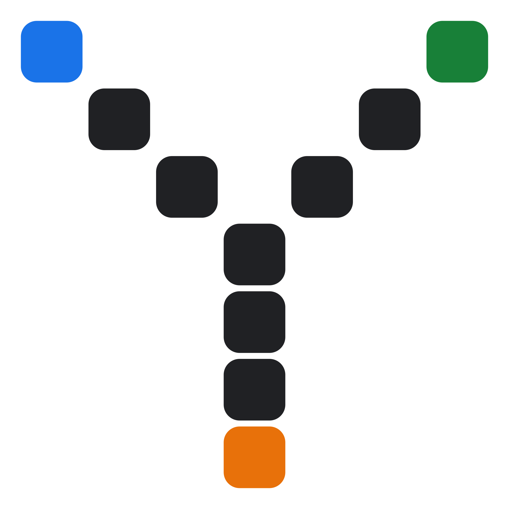
57 Grid Y
Y as a 7×7 grid of rounded tiles with three accent tiles — calendar cells forming the letter.
svg/57-built-y-grid.svg png/marks/57-built-y-grid-512.png png/marks/57-built-y-grid-128.pngO · Playful Y
58 Sticker Y
Tilted sticker with hard blue shadow and an orange sparkle. Laptop-sticker energy.
svg/58-playful-y-sticker.svg png/marks/58-playful-y-sticker-512.png png/marks/58-playful-y-sticker-128.png59 Squiggle Y
Hand-drawn orange squiggle under the Y — a highlighter swipe.
svg/59-playful-y-squiggle.svg png/marks/59-playful-y-squiggle-512.png png/marks/59-playful-y-squiggle-128.png60 Tri-color capsule Y
Capsule Y in blue / green / orange — the event-palette as the letter itself.
svg/60-playful-y-tricolor.svg png/marks/60-playful-y-tricolor-512.png png/marks/60-playful-y-tricolor-128.pngP · Big-Y lockup
61 Lockup — capsule Y + mono
Blue capsule Y over lowercase mono wordmark with dotted rule. Square-ish splash footprint.
svg/61-lockup-y-mono.svg png/lockups/61-lockup-y-mono-1600.png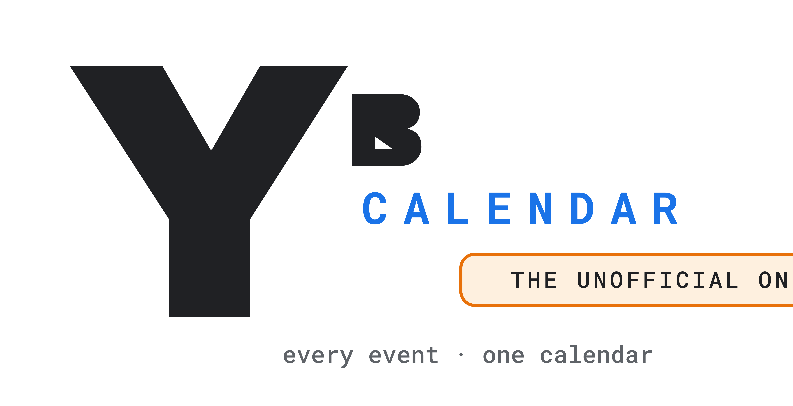
62 Lockup — “the unofficial one”
Big Y + wordmark with an honest orange tag: THE UNOFFICIAL ONE. Directly answers “not BYU themselves”.
svg/62-lockup-y-unofficial.svg png/lockups/62-lockup-y-unofficial-1600.png63 Circle badge Y
Thick ink ring, big blue Y, two accent dots. Minimal stamp-style badge.
svg/63-badge-y-circle.svg png/marks/63-badge-y-circle-512.png png/marks/63-badge-y-circle-128.png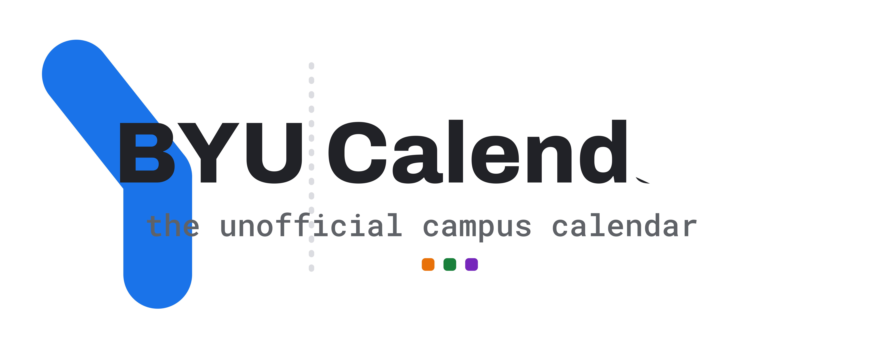
64 Lockup — capsule Y horizontal
Blue capsule Y, dotted divider, wordmark with quiet “unofficial” note and event dots.
svg/64-lockup-y-horizontal.svg png/lockups/64-lockup-y-horizontal-1600.pngL · 3D (Blender)
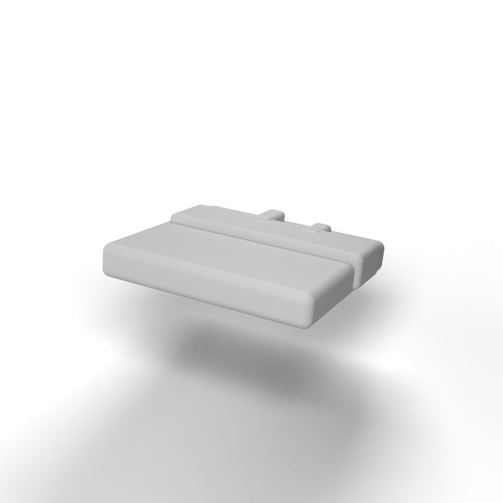
41 3D Y-tile — tilted
Blender render: calendar tile with beveled edges, blue band, ring posts, extruded Y, toon ink outlines.
3d/41-3d-y-tile-tilt.png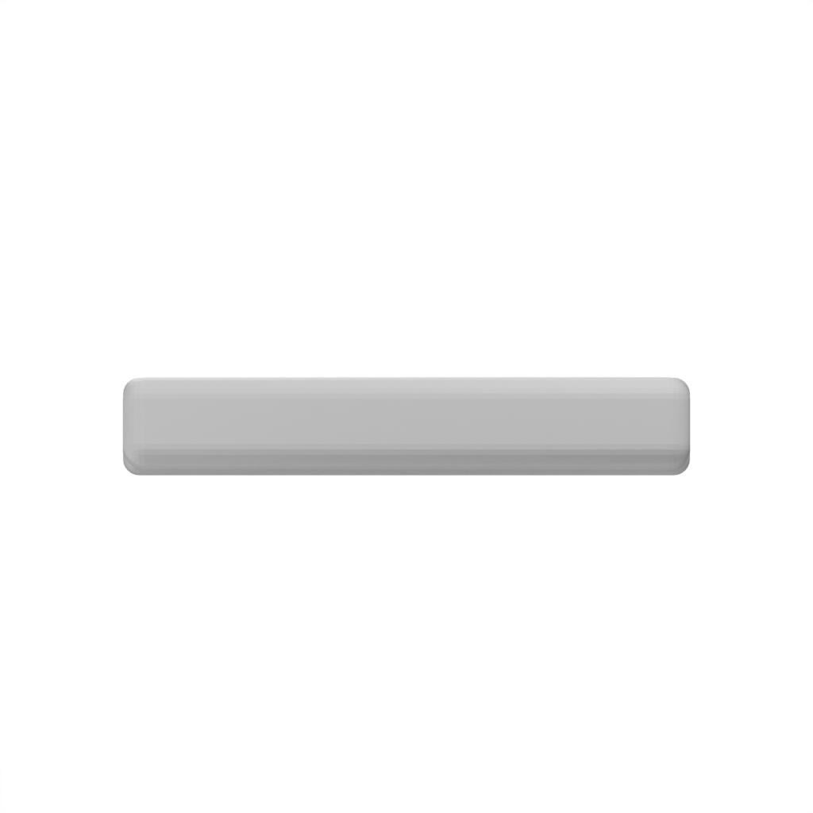
42 3D Y-tile — app icon
Straight-on orthographic render: a modern, softly-lit app-icon take on the Y-tile.
3d/42-3d-y-tile-appicon.png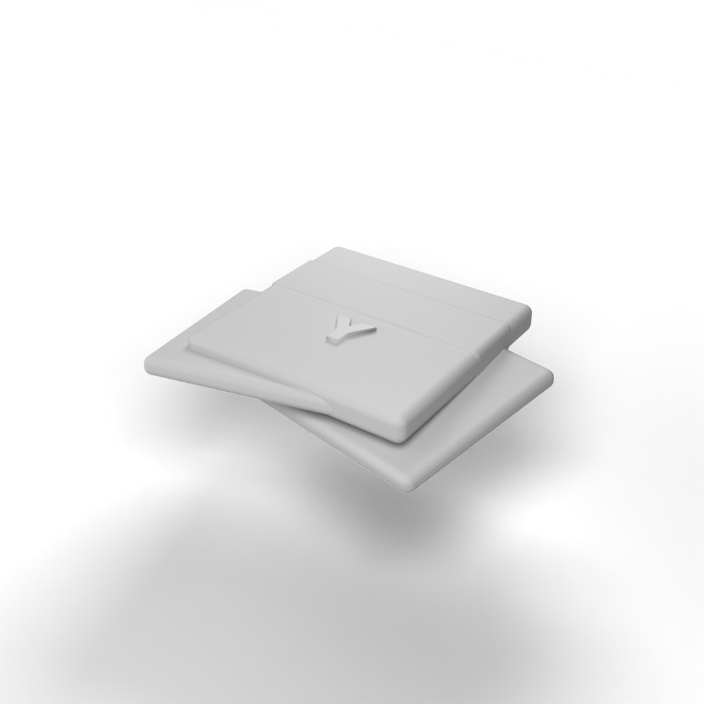
43 3D — one-calendar stack
Fanned calendar pages behind the front card; the product story in 3D.
3d/43-3d-stack-pages.png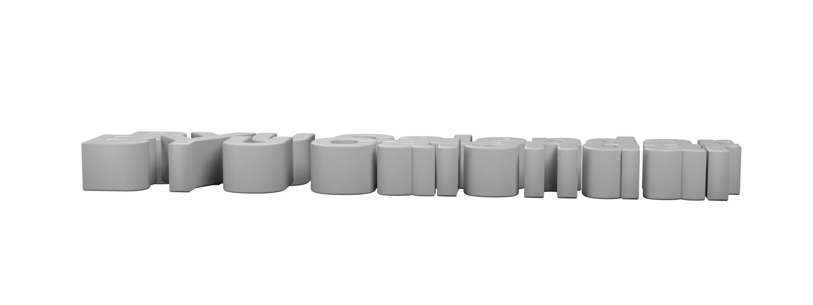
44 3D wordmark
Extruded Archivo wordmark with a hard blue offset copy behind.
3d/44-3d-wordmark.png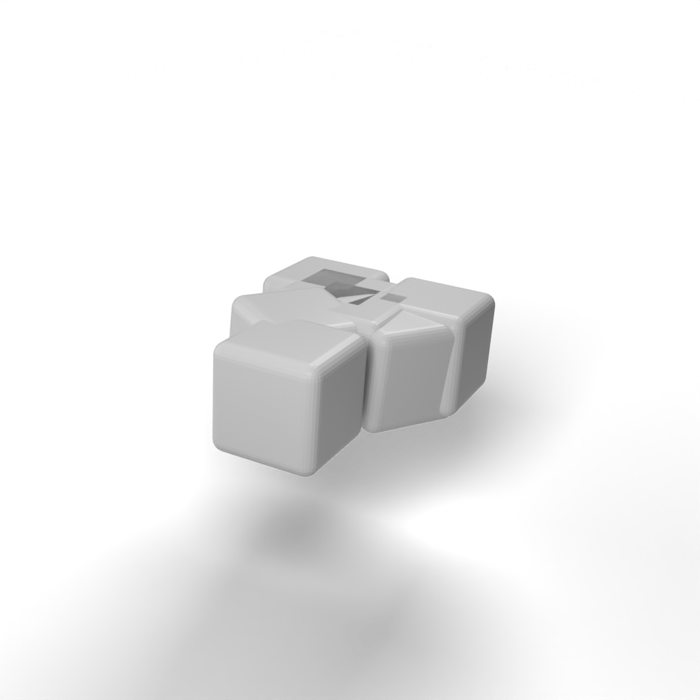
45 3D — event-cube Y
Isometric Y built from rounded palette cubes.
3d/45-3d-cube-y.png